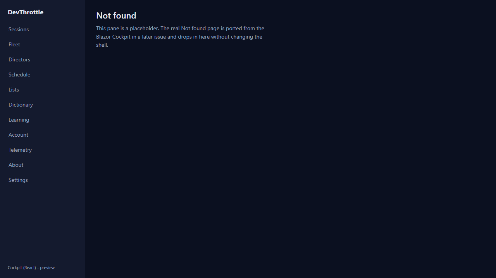

Epic: #967 (holistic QA sweep). Severity: major. Surface: Cockpit (React web dashboard) + shared client-core + Gateway.
Any mid-session HTTP 401 on the DESKTOP Cockpit hard-navigated the whole app to the MOBILE PWA
sign-in route /m/signin, ejecting the user from the desktop shell into the phone
enrollment flow. The cause: shared packages/client-core/src/api/client.ts hardcoded
SIGN_IN_PATH = "/m/signin" and onUnauthorized() hard-navigated there.
onUnauthorized() is invoked from listSessions(), which the desktop roster
polls, so it was reachable in normal use once Gateway auth enforcement is on (token rotated/revoked,
logout, auth toggled).
The unauthorized-redirect target is now SHELL-AWARE, injected per shell instead of hardcoded in the shared package:
client.ts replaces the hardcoded constant with an injectable resolver:
configureUnauthorizedRedirect(redirect), a pure resolveSignInTarget(current)
the 401 path calls, and two reusable builders - gatewayLoginRedirect (desktop) and
mobileSignInRedirect (mobile, also the default). onUnauthorized() resolves
the target from the current location and hard-navigates there.apps/cockpit/src/main.tsx installs gatewayLoginRedirect at startup, so a
desktop 401 re-gates through the Gateway /login?next=<current> cookie flow the
shell already relies on (see AuthMiddleware / GatewayEndpoints /login).apps/mobile/src/main.tsx installs mobileSignInRedirect at startup, keeping
the phone on its own /m/signin screen (behavior unchanged)./m/... path remains in shared client-core for the desktop path; the only
/m/signin literal is the explicit mobile builder.| Criterion | How met | Proof |
|---|---|---|
A 401 on the desktop Cockpit routes to the desktop/Gateway sign-in (not /m/signin);
a 401 on the mobile shell still routes to /m/signin. |
Desktop installs gatewayLoginRedirect -> /login?next=...; mobile installs
mobileSignInRedirect -> /m/signin. |
Live 401 (below) + unit test client.test.ts (4 assertions). |
No hardcoded /m/... path remains in shared client-core for the desktop path. |
The desktop resolver and onUnauthorized contain no /m literal; the
default and mobile builder are the only /m/signin occurrences. |
Code review of client.ts diff. |
| Ingress lint still passes (no absolute URLs). Full build gate clean. | All targets are root-relative. Build gate run below. | Gate results below. |
The built desktop Cockpit was served by its Vite dev server at the site root /. Playwright
intercepted the roster poll's GET /sessions and answered 401 - the exact
mid-session unauthorized condition. Result: the app hard-navigated to
/login?next=%2F (the Gateway sign-in), and did not touch
/m/signin.
{
"loaded": "http://localhost:5311/",
"sessions_401_intercepts": 2, // roster poll fired (2x under React StrictMode)
"final_url": "http://localhost:5311/login?next=%2F",
"went_to_login": true,
"went_to_m_signin": false
}
PASS - desktop 401 routed to the Gateway /login flow, never to the mobile /m/signin.
Note: on the Vite dev server, /login is served the SPA fallback (the React
"Not found" placeholder in the screenshot below), because the real /login page
(login.html) is served by the Gateway, not the static SPA. The authoritative evidence is the
final_url - the app navigated to /login?next=%2F, which the Gateway serves as the
token sign-in page in production. Raw capture: live-proof.json.

packages/client-core/src/api/client.test.ts exercises the exact builder functions each
shell installs plus the resolver the 401 path calls - proving the contract without a DOM:
/login?next=<encoded current>, and asserts it does NOT contain
/m/signin and does not start with /m/;next=);/m/signin;/m/signin.Test Files 6 passed (6)
Tests 79 passed (79) (includes 4 new client.test.ts assertions)
| Gate | Result |
|---|---|
npm run typecheck (all workspaces) | clean |
npm run lint (ingress / no absolute URLs) | clean |
cockpit npm run build | built |
mobile npm run build | built |
client-core vitest run | 79 passed |
dotnet build CcDirector.Gateway -p:RunCockpitBuild=true | Build succeeded, 0 Warning(s), 0 Error(s) |
dotnet build cc-director.sln | Build succeeded, 0 Warning(s), 0 Error(s) |
No drift. No architecture container or security-profile rule changes - this reroutes a client-side
redirect target within the existing Gateway auth model (the desktop path now uses the same
/login?next= flow AuthMiddleware already issues for unauthenticated browser
navigations).
I believe this is finished.